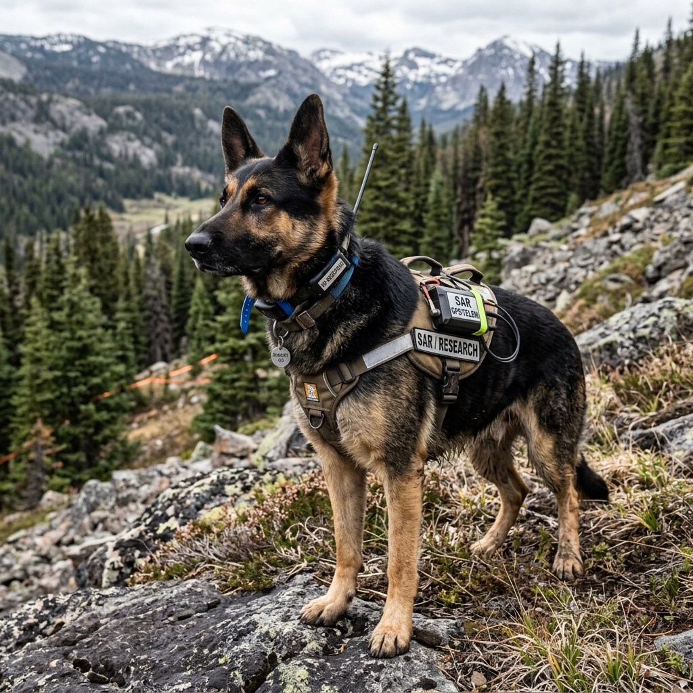
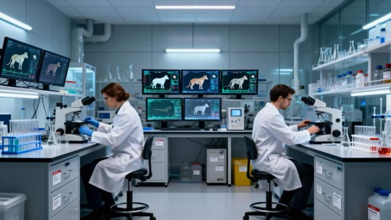
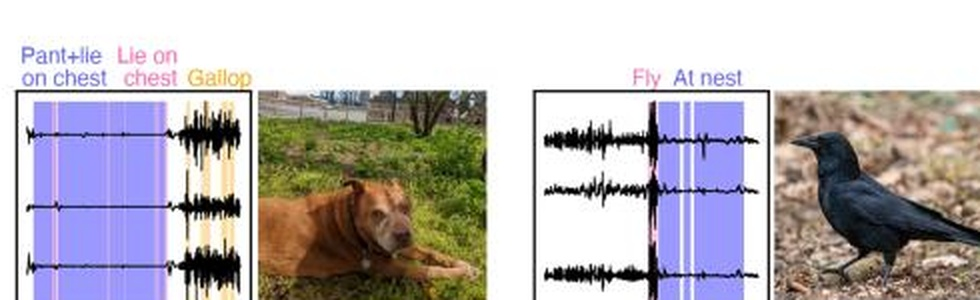
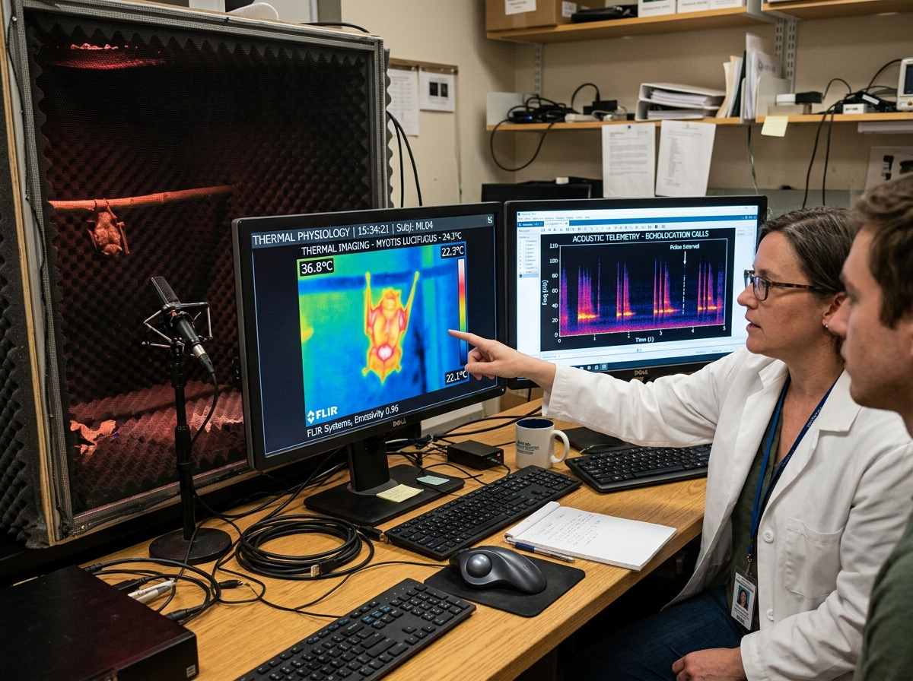
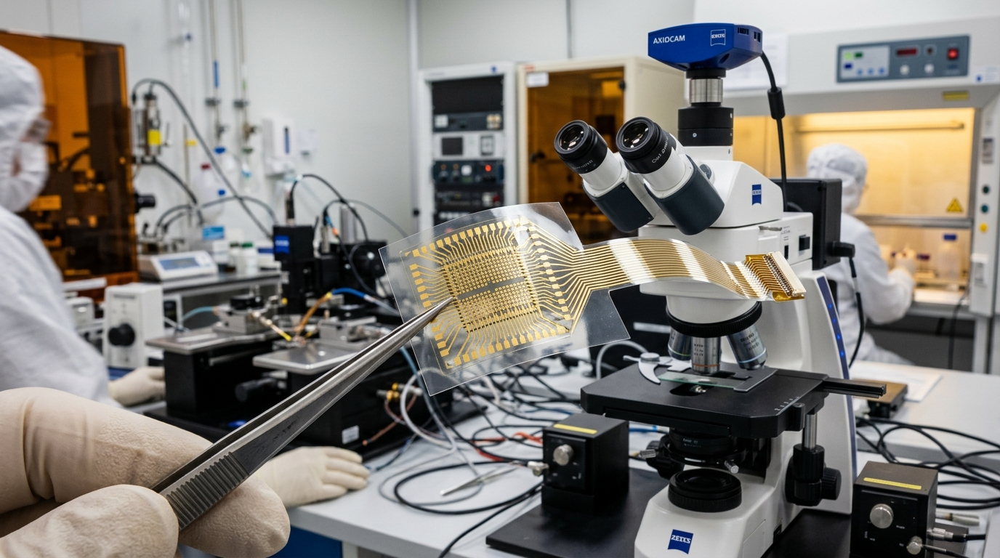
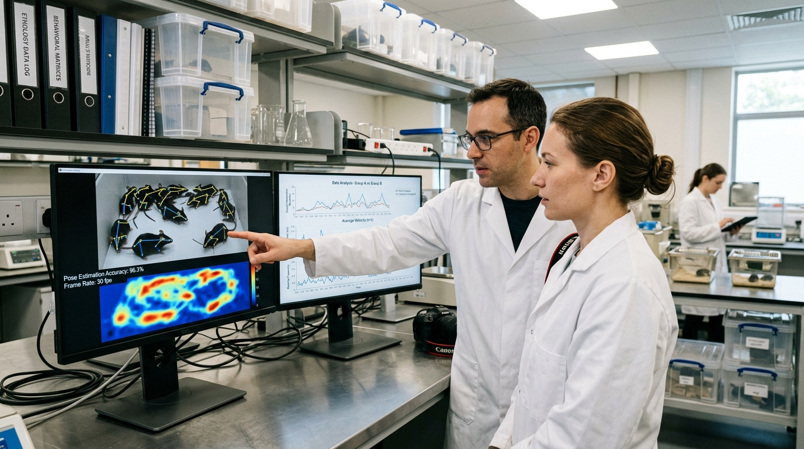
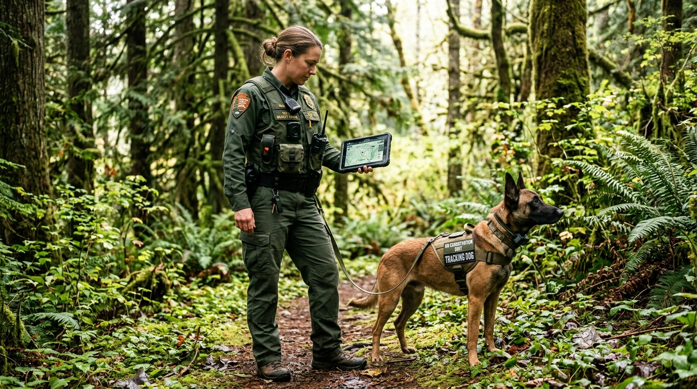

DECODING INSTINCT · ENCODING INTENT
Project AEGIS: AI-Driven Interspecies Communication Framework & Cooperative Intelligence
Sets high-level mission objective (search, rescue, conservation); always retains sole operational authority.
Observes, interprets & translates: Human intention ↔ Observable biological behavioral patterns.

Never modified; operates via natural instincts: retains complete biological free will & agency.
World's first AI-powered interspecies framework to help humans understand and collaborate with intelligent working species while preserving natural agency.
Humans shouldn't replace nature's evolutionary intelligence—we should learn to communicate with it. Not controlling animals, but building an intelligent bridge.
Human sets the goal. AEGIS interprets. Animal responds naturally. Translating biological patterns through multimodal AI—never mind reading or involuntary control.
Research Foundation & Species Dossiers
"Before AI understands a species, science must understand it first." AEGIS begins with research—building a standardized biological knowledge base before any AI model is trained.

Cross-Disciplinary R&DSpecialists establish standardized observation protocols before any algorithm is trained.

Earth Species Project · Tri-Axial Bio-Logging BenchmarkStrict Principle: The AI learns from verified behavioral evidence—never subjective assumptions about emotions.
Each model becomes an expert in one biological communication system—zero monolithic hallucination.
Traditional training teaches individual animals. AEGIS builds species-level scientific understanding, making future interspecies communication scalable, consistent, and research-driven.
Multimodal Biological Sensing
"One signal never tells the whole story." AI recognizes complex multi-sensor patterns across large behavioral datasets.

The Mothership & Species Foundation Models
One coordinator. Many specialists. Instead of one fragile monolithic model, each species receives its own foundation model coordinated by a central general.
High-sensitivity olfactory telemetry & subterranean structural navigation.
Working search & rescue ethology, micro-posture & scent alert tracking.
Aerial vantage survey, corvid spatial geometry & causal tool reasoning.
Sub-surface echolocation acoustic arrays, whistle syntax & maritime rescue.
Decoding Today vs. Long-Term Research Direction
Separating near-term empirical evidence from long-term research horizons to protect scientific credibility.
Pragmatic Grounding & 5-Phase Research Roadmap
"We know the difference between today's science and tomorrow's vision." A disciplined research roadmap from cross-disciplinary R&D to field validation.

Flexible Sensor Arrays
Ethology Pose SetupDisciplines: Neuroscience, Ethology, Vet & AI Engineering.
Deliverable: Standardized multi-species observation protocols.
Telemetry: Synchronized audio, posture, thermal & motion.
Rule: Behavior labels, not emotion.
Domain SFMs: Dedicated models (Dog, Crow, Dolphin, Rat).
Deliverable: Learns recurring species behavioral manifolds.
Architecture: MoE multi-agent router & telemetry bus.
Rule: Coordinates specialists, never replaces them.
Environments: Controlled SAR & reserve conservation pilots.
Rule: Zero premature deployment claims without telemetry.
Ethical Boundaries & Scientific Defense
Preserving animal free will and biological agency. Answering difficult questions before judges ask them.
Project AEGIS strictly rejects cognitive intervention. We build an intelligent acoustic and physiological bridge that honors animal free will, instinctual intelligence, and human ethical responsibility.
Wildlife Conservation in Action
A forest ranger begins a search operation. A trained animal responds naturally. AEGIS interprets behavioral patterns. Human makes the final decision.

"AEGIS is an AI-powered interspecies framework that combines multimodal biological sensing with species foundation models to help humans collaborate with working species while strictly preserving their natural agency."
"Humanity's next breakthrough may not come from building smarter machines. It may come from learning how to communicate with the intelligence that already exists in nature."